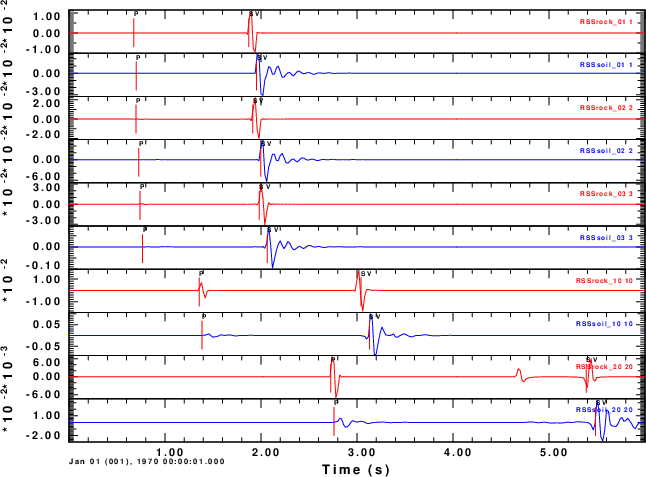
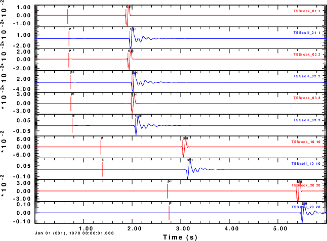
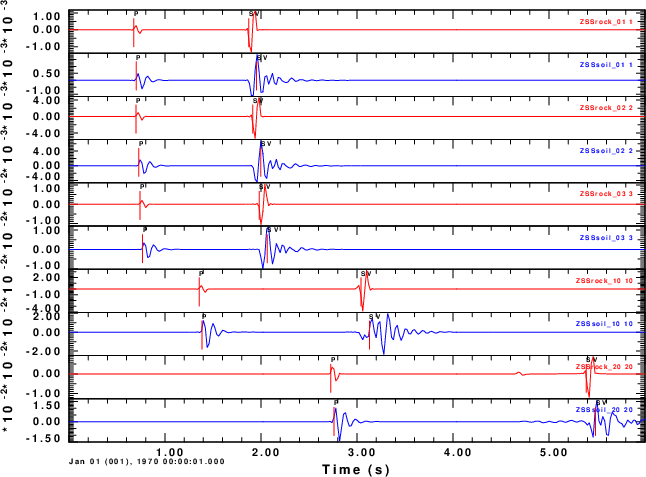
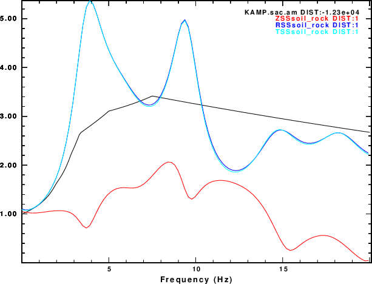
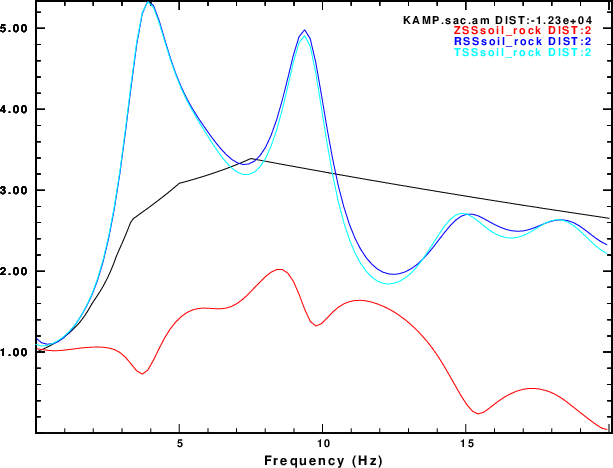
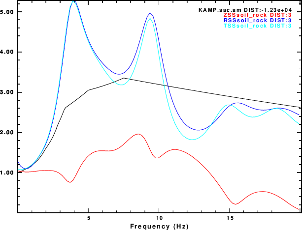
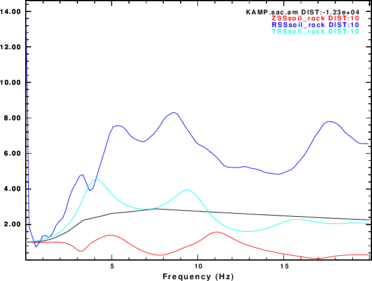
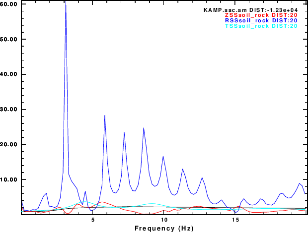

This set of tests uses the CPS program sequence hprep96, hspec96, hpulse9 and f96tosac to create complete synthetics.
We consider the the case of a source at a depth of 10km and epicentral distances of 1, 2, 3, 10 and 20 km.
The two models are
| Rock model | Soil model | |
Rock halfspace ISOTROPIC KGS FLAT EARTH 1-D CONSTANT VELOCITY LINE08 LINE09 LINE10 LINE11 H(KM) VP(KM/S) VS(KM/S) RHO(GM/CC) QP QS ETAP ETAS FREFP FREFS 20.0 6.0 3.5 2.7 0.000 0.000 0 0 1 1 |
The processing script for this angle of incidence is DOIT which calls the script DODIST. These3 scripts is annotated with comments that describe the operations. Note that the
shell script DOPLTPNG is used to convert the CPS PLT files to a png file using the ImageMagick convert. If ImageMagick is not installed, do something like
plotnps -F7 -W10 -EPS -K < P001.PLT > P001.epsand then use some other code to convert the Encapsulated PostScript P001.eps to a useful format. The DOPLTPNG script is given below.
The DODIST invokes sacampl with the -TXT flag and the angle is defined as the arc tangent of (epicentral distance/source depth). This means that the ASCII file sacsampl_distance.txt will be available. As an aside, if one wishes to compare the synthetics response to the output of sacampl, then use gsac to create a CSV file.
Running the DOIT creates 8 PNG files. Three compare the time domain seismograms as a function of epicentral distance for the R, T and Z components. The remaining five compare the Soil/Rock spectra ratios as a function of distance.
The plots are
|  Comparison of the radial component traces for the Rock (red) and Soil (blue) traces as a function of epicentral distance. |
|  Comparison of the transverse component traces for the Rock (red) and Soil (blue) traces as a function of epicentral distance. |
|  Comparison of the vertical component traces for the Rock (red) and Soil (blue) traces as a function of epicentral distance. |
|  Site effect ratios at an epicentral distance of 1.0 km. |
|  Site effect ratios at an epicentral distance of 2.0 km. |
|  Site effect ratios at an epicentral distance of 3.0 km. |
|  Site effect ratios at an epicentral distance of 10.0 km. |
|  Site effect ratios at an epicentral distance of 20.0 km. |
The spectral ratios at 1, 2 and 3 km look very similar to the plane wave results. The quarter-wavelength formula seems to fit the horizontal R and T components.
At a distance of 10km the amplification on the radial component increases, while at 20 km, this amplification becomes very large, although the rations of the Z and T components seem to behave well.
#!/bin/sh
for i
do
B=`basename $i .PLT`
plotnps -F7 -W10 -EPS -K < $i > t.eps
convert -trim t.eps -background white -alpha remove -alpha off ${B}.png
rm t.eps
done